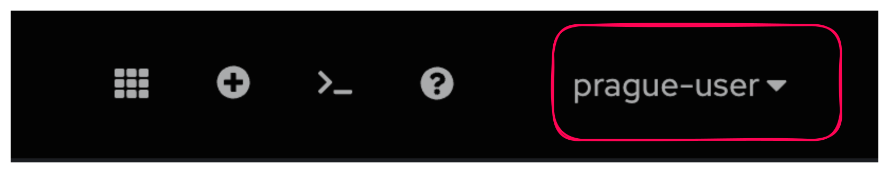
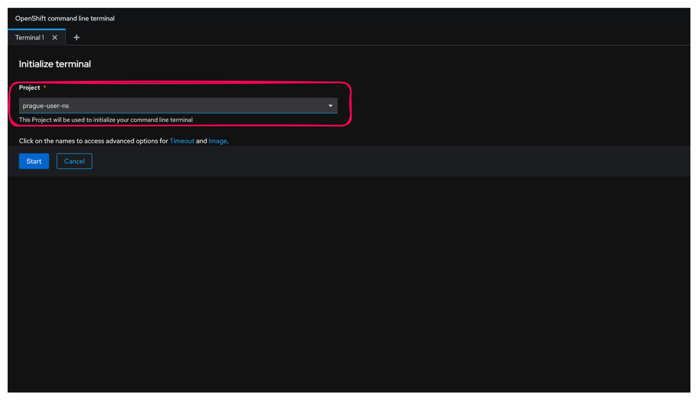

Exercice Guidé : Interaction avec OpenShift via la Ligne de Commande
Objectif
Cet exercice vous guidera à travers les étapes de base pour se connecter à un cluster OpenShift, explorer les commandes disponibles, et gérer une application simple.
Toutes les commandes doivent être exécutées dans le terminal web d'OpenShift.
1. Connexion au Cluster OpenShift
Pour commencer, vous devez vous connecter à votre cluster OpenShift :
- Accédez à la console Web OpenShift.
- Cliquez sur votre nom d'utilisateur en haut à droite.
-
Sélectionnez "Copy login command".

-
Cliquez sur "Display Token" pour afficher le token.

-
Copiez la commande de connexion affichée.
- Ouvrez le terminal web OpenShift en haut à droite.

- Cliquez sur Open terminal in a new tab et selectionnez votre projet. Cliquez sur start. Le premier démarrage peut prendre quelques secondes


- Collez et exécutez cette commande dans votre terminal web OpenShift.
oc login --token=<votre_token> --server=https://api.ocp4.example.com:6443
Vous devriez voir un message confirmant la connexion réussie :
Login successful.
You have access to 58 projects, the list has been suppressed. You can list all projects with 'oc projects'
Using project "default".
Cette étape vous connecte à votre cluster OpenShift en utilisant un token d'authentification. La connexion est nécessaire pour interagir avec les ressources de votre cluster via la ligne de commande.
2. Exploration des Commandes Disponibles
Maintenant que vous êtes connecté, voyons les commandes que vous pouvez utiliser pour interagir avec votre cluster :
- Listez les commandes disponibles avec
kubectl:
kubectl help
Vous verrez une liste de commandes disponibles pour interagir avec Kubernetes, par exemple :
Basic Commands (Beginner):
create Create a resource from a file or from stdin.
expose Take a replication controller, service, deployment or pod and expose it as a new Kubernetes Service
run Run a particular image on the cluster
set Set specific features on objects
- Listez les commandes disponibles avec
oc:
oc help
Vous verrez une liste de commandes disponibles pour interagir avec OpenShift, y compris les commandes spécifiques à OpenShift, par exemple :
Build and Deploy Commands:
new-app Create a new application
new-build Create a new build configuration
start-build Start a new build
La commande oc prend en charge les mêmes fonctionnalités que la commande kubectl. La commande oc fournit des commandes supplémentaires pour la prise en charge native d’un cluster OpenShift. La commande new-project, par exemple, crée dans le cluster OpenShift un projet qui est un espace de noms Kubernetes. La commande new-app est spécifique à la commande oc. Elle crée des applications en utilisant le code source existant ou des images prédéfinies.
3. Gestion des Namespaces
Les namespaces permettent d'organiser les ressources dans votre cluster. Vous pouvez voir le namespace actuel et en changer si nécessaire :
- Affichez le namespace actuel :
oc project
Vous verrez une sortie similaire à celle-ci :
Using project "prague-user-ns" from context named "prague-user-context" on server "https://172.30.0.1:443".
- Changez de namespace (si nécessaire) :
oc project <nom_du_namespace>
Par exemple :
oc project myproject
Vous verrez une confirmation du changement de projet :
Now using project "myproject" on server "https://api.ocp4.example.com:6443".
Les namespaces (ou projets) permettent d'isoler les ressources dans un cluster. Cette commande vous permet de vérifier et de changer le namespace actif pour organiser et accéder aux ressources spécifiques à un projet.
4. Création d'une Nouvelle Application
Nous allons maintenant créer une application simple en utilisant une image de base. Suivez ces étapes :
- Créez une nouvelle application en utilisant une image de base :
oc new-app --image=quay.io/neutron-it/p02l01-go-app
Vous verrez une sortie similaire à celle-ci :
--> Found container image ec997ee (10 minutes old) from quay.io for "quay.io/neutron-it/p02l01-go-app"
Go 1.21.11
----------
Go Toolset available as a container is a base platform for building and running various Go applications and frameworks. Go is an easy to learn, powerful, statically typed language in the C/C++ tradition with garbage collection, concurrent programming support, and memory safety features.
Tags: builder, golang, golang121, rh-golang121, go
* An image stream tag will be created as "p02l01-go-app:latest" that will track this image
--> Creating resources ...
deployment.apps "p02l01-go-app" created
service "p02l01-go-app" created
--> Success
Application is not exposed. You can expose services to the outside world by executing one or more of the commands below:
'oc expose service/p02l01-go-app'
Run 'oc status' to view your app.
Cette commande crée une nouvelle application basée sur l'image "p02l01-go-app". OpenShift crée automatiquement les ressources nécessaires, comme l'image stream, la configuration de déploiement et le service.
5. Description de l'Application
Pour obtenir des détails sur l'application que vous venez de créer :
- Décrivez votre application pour obtenir des détails :
oc describe deployment/p02l01-go-app
Vous verrez une sortie détaillée avec des informations sur la configuration de déploiement, les stratégies de déploiement, l'état des réplicas, et plus encore :
Name: p02l01-go-app
Namespace: prague-user-ns
CreationTimestamp: Sun, 21 Jul 2024 10:09:10 +0000
Selector: deployment=p02l01-go-app
Replicas: 1 desired | 1 updated | 1 total | 1 available | 0 unavailable
StrategyType: RollingUpdate
MinReadySeconds: 0
RollingUpdateStrategy: 25% max unavailable, 25% max surge
...
Cette commande fournit des informations détaillées sur la configuration de déploiement de votre application, y compris l'état actuel des pods, les stratégies de déploiement et les sélecteurs.
Vérifiez que votre pod est maintenant au status Ready :
oc get po
Attendez que votre pod soit indiquez en Running avant de passer à l'étape suivante :
NAME READY STATUS RESTARTS AGE
p02l01-go-app-6c457d7469-vhl2q 1/1 Running 0 2m33s
workspacee44a9674bf734f38-56fc7fdc44-6n2nr 2/2 Running 0 26m
6. Affichage des Logs de l'Application
Pour diagnostiquer les problèmes ou vérifier que tout fonctionne correctement :
- Affichez les logs de l'application :
oc logs deployment/p02l01-go-app
Vous verrez les logs générés par les conteneurs de votre application :
Bravo, vous êtes dans Exercice Guidé : Interaction avec OpenShift via la Ligne de Commande
Les logs sont essentiels pour diagnostiquer les problèmes et vérifier que l'application fonctionne comme prévu.
7. Exécution de Commandes dans un Pod
Pour interagir avec les conteneurs de votre application, vous pouvez exécuter des commandes directement dans un pod en utilisant oc exec :
- Obtenez la liste des pods :
oc get pods
Vous verrez une liste des pods en cours d'exécution, par exemple :
NAME READY STATUS RESTARTS AGE
p02l01-go-app-7f5b7fdfd6-4rfsl 1/1 Running 0 2m
- Exécutez une commande dans un pod : Pour obtenir un shell interactif dans un pod :
oc exec -it <pod-name> -- /bin/sh
#oc exec -it p02l01-go-app-7f5b7fdfd6-4rfsl -- /bin/sh
Remplacez <pod-name> par le nom du pod obtenu à l'étape précédente. Cela vous permettra de vous connecter au pod et d'exécuter des commandes à l'intérieur.
Vous pouvez maintenant éxécutez des commandes. Exemple :
ps aux
sh-4.4$ ps aux
USER PID %CPU %MEM VSZ RSS TTY STAT START TIME COMMAND
1001540+ 1 0.0 0.0 12004 2496 ? Ss 10:09 0:00 sh -c ./main && while true; do sleep 86400; done
1001540+ 12 0.0 0.0 23148 1528 ? S 10:09 0:00 /usr/bin/coreutils --coreutils-prog-shebang=sleep /usr/bin/sleep 86400
1001540+ 20 1.5 0.0 12136 3232 pts/0 Ss 10:20 0:00 /bin/sh
1001540+ 26 0.0 0.0 44784 3436 pts/0 R+ 10:20 0:00 ps aux
Pour sortir du shell utilisez exit
sh-4.4$ exit
8. Suppression de l'Application
Enfin, pour nettoyer les ressources créées :
- Supprimez l'application nouvellement créée :
oc delete all -l app=p02l01-go-app
Vous verrez une confirmation de suppression :
service "p02l01-go-app" deleted
deployment.apps "p02l01-go-app" deleted
Warning: apps.openshift.io/v1 DeploymentConfig is deprecated in v4.14+, unavailable in v4.10000+
imagestream.image.openshift.io "p02l01-go-app" deleted
Cette commande supprime toutes les ressources associées à l'application "nginx" en utilisant une étiquette (label). C'est une méthode rapide pour nettoyer les ressources créées.
Conclusion
En suivant ces étapes, vous aurez appris à vous connecter à un cluster OpenShift, à comparer les commandes kubectl et oc, à obtenir des informations sur le cluster, à gérer des namespaces, à créer et gérer une application, et enfin à supprimer cette application. Ces compétences sont essentielles pour administrer efficacement des environnements OpenShift et Kubernetes.